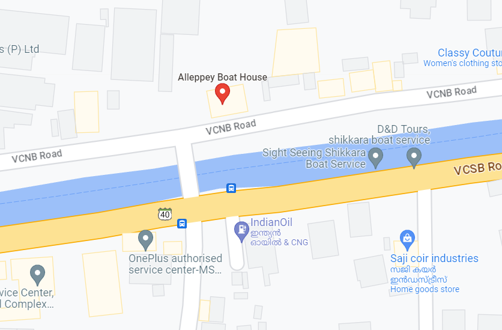

Kerala Backwaters
Kerala, often referred to as "God's Own Country," is a land of unparalleled natural beauty and cultural richness. Nestled along the southwestern coast of India, Kerala is renowned for its picturesque landscapes, lush greenery, and unique backwaters. At the heart of this captivating milieu lies an iconic attraction that encapsulates the essence of Kerala's beauty and heritage – the Kerala houseboat.
The concept of houseboats in Kerala dates back centuries, rooted in the historical necessity for transportation along the intricate network of rivers, lakes, and lagoons that define the region's geography.
Kerala's houseboats, known locally as "kettuvallams," are masterpieces of traditional craftsmanship. Constructed from locally sourced materials, primarily bamboo, coir, and wood, these boats showcase the skilled workmanship of generations.
Kerala's houseboats are more than mere vessels navigating the backwaters; they are vessels of culture, heritage, and tranquility. Their historical roots, distinctive construction, role in cultural preservation, and the unique experience they offer to travelers make them an integral part of Kerala's identity.


Karimeen
Pollichathu

Avial

Payasam

Where can I stay?
Travel by clicking below
